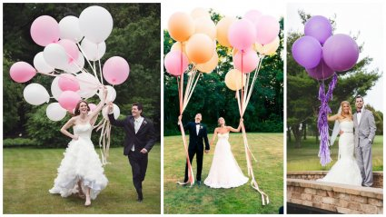
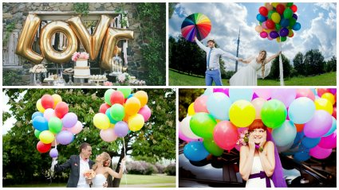

Свадьба - одно из самых ярких, торжественных и запоминающихся событий в жизни человека. И для того, чтобы воспоминания об этом дне были приятными, необходимо позаботиться о создании особой атмосферы Вашего праздника. Огромную роль при создании уникальной, неповторимой атмосферы торжества играет оформление свадьбы. Наиболее бюджетным, но в тоже время ярким, красивым и интересным является оформление воздушными шарами. Благодаря шарам удаётся передать лёгкое праздничное настроение событию, они прекрасно придают объём помещению, делая его живым, слегка игривым и красочным. Шары создают особый стиль и оригинальность, помогают воплотить любую, даже самую фантастическую идею.
К тому же это достаточно простой и экономичный способ украшения банкетного помещения. Для декорирования можно выбрать традиционные кольца, сердца, имена и фигуры жениха и невесты, а также оформить зал арками, стойками, гирляндами, фонтанами из шаров, подобрав цветовую гамму, форму и размер шаров по Вашему вкусу. Также для оформления свадебного торжества часто используют светящиеся воздушные шары. Они вносят определённую изюминку в оформление и позволяют оригинально и, самое главное безумно красиво, оформить свадьбу.
Эти шары будут освещать пространство, создавая романтическую обстановку в течение 15 часов, удивляя и завораживая чудесным магическим светом новобрачных и гостей торжества. Светящиеся шарики станут прекрасным световым фоном для первого свадебного танца молодожёнов. Запуск светящихся шаров в свободный полёт в небо - это тоже достаточно завораживающее своей красотой зрелище. Цвет светящихся шариков можно подобрать согласно Вашему вкусу и предпочтениям.
Также они имеют различные рисунки и формы, что даёт возможность создавать из них разнообразные оригинальные композиции: кольца, сердца, светящиеся арки и гирлянды, лебеди, ангелочки, имена новобрачных и т.д. Быструю популярность на свадьбах и вечеринках набирают большие шары. С помощью этих огромных шаром можно очень оригинально оформить банкетное помещение или фотозону.
Наши специалисты готовы предложить Вам варианты оформления на любой вкус - от классических до креативных, выслушать Ваши пожелания и создать индивидуальное оформление Вшей свадьбы.
 